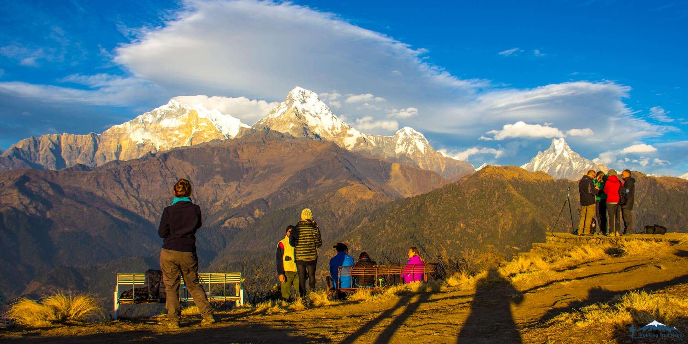

Upper Mustang Trek
The Upper Mustang trek is the ultimate gateway to the mysterious world of the old Buddhist kingdom of Mustang, also called Lo. Once forbidden and isolated from the rest of the world for decades, the area was able to evolve within its own distinctive culture and rich traditions closely tied to Tibet. This moderate, lesser-known trek passes through one of the driest regions of Nepal and provides spectacular mountain scenery.
Highlights
- Visit the ancient Kingdom of Lo Manthang
- Trek through a stark desert landscape with spires and cliffs
- Lying in the rain shadow, a great trek to escape the summer monsoon
Planning Your Trek
Mustang—commonly referred to as 'Upper Mustang'—is an arid river valley that runs north-south off the upper corner of the Annapurna Circuit. Both culturally and geographically, it's more similar to Tibet than Nepal and used to form its own kingdom, with its capital in Lo Manthang (the turnaround point of your trek). Lying in the rain shadow of the Himalaya, and officially one of Nepal's restricted regions, this trek is known for its desert beauty and harsh, cliff-faced landscapes.
Best Season
Upper Mustang lies in the rain shadow of the Himalaya, making it a great monsoon trek and open year-round for trekking. The main consideration is the winter, when most residents leave the capital to avoid the cold and snow. Generally, the best time to visit Upper Mustang is from March to early November.
Brief Itinerary
The itinerary below starts and ends in the city of Pokhara, which is a 25-minute flight from Kathmandu. Your trip can also be organized from Kathmandu, according to your preference.
Day Destination Altitude Duration
Day 1 Welcome to Kathmandu!
Day 2 Explore Kathmandu
Day 3 Flight from Pokhara to Jomsom, Trek to Kagbeni 2,847 m
Day 4 Trek from Kagbeni to Chele 3,050 m 5-6 hours
Day 5 Trek from Chele to Zhaite 3,730 m 7-8 hours
Day 6 Trek from Zhaite to Charang via Dhakmnar and Lo Gekar 3,575 m 5-6 hours
Day 7 Trek from Charang to Lo Manthang (explore the ancient city) 3,820 m 5-6 hours
Day 8 Stay in Lo Manthang (Namgyal Gompa and Thinggar Valley) 3,780 m (rest day)
Day 9 Stay in Lo Manthang (the Chosar Valley) 3,780 m (rest day)
Day 10 Trek from Lo Manthang to Dhakmar via Lo Gekar 3,730 m 6-7 hours
Day 11 Trek from Dhakmar to Geling 3,570 m 4-5 hours
Day 12 Trek from Geling to Chuksang 2,950 m 7-8 hours
Day 13 Trek from Chuksang to Jomsom 2,750 m 5-6 hours
Day 14 Flight from Jomsom to Pokhara 853 m (25-minute flight)
Day 15 Depart Kathmandu